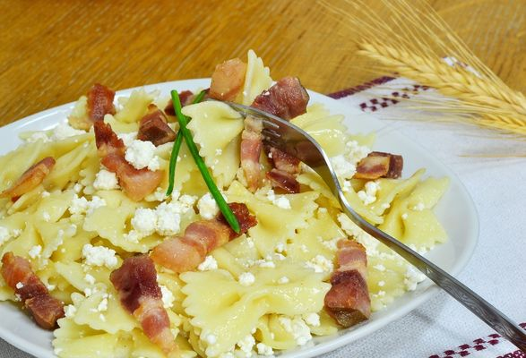

Sruby

Description
This is my favorite "one-pot" recipe, that just makes sense and is so easy and quick to do. You will need some high-fat Quark, a traditional dairy product in Slavic speaking countries.
Ingredients
- fusilli pasta (it looks like a screw, in Slovak language: Sruby)
- 200 grams of quark
- 60 grams of bacon
- 1 onion
- olive oil
- salt
Steps
- Cook the pasta in salted boild water, follow the instructions on the package.
- While cooking, cut onion and bacon to small pieces.
- Once pasta is cooked, leave it in colander.
- In the same pot on low heat, add olive oil and onion, stir well. Once it catches a bit of color, throw in the bacon.
- Once browned a little, turn off the heat, put in the cooked pasta and stir everything thoroughly.
- Finally, crumble the quark onto the pasta and stir again.